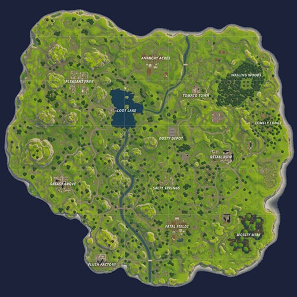
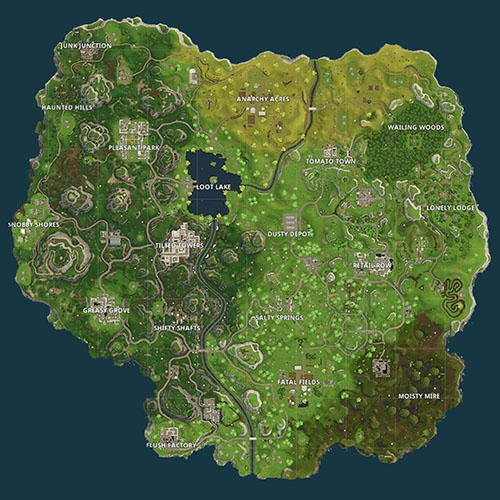
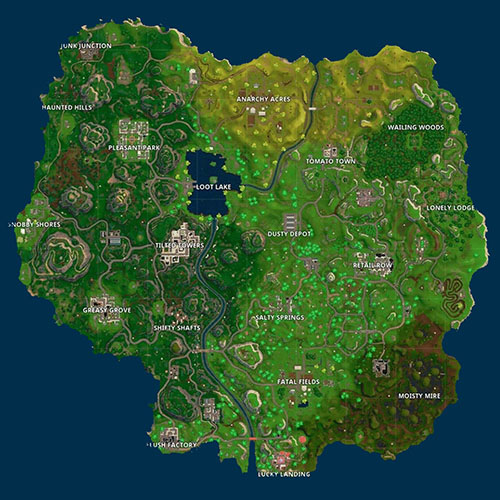
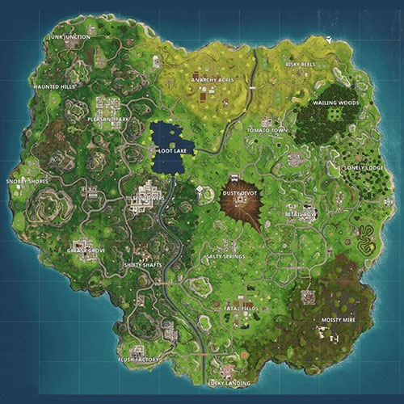
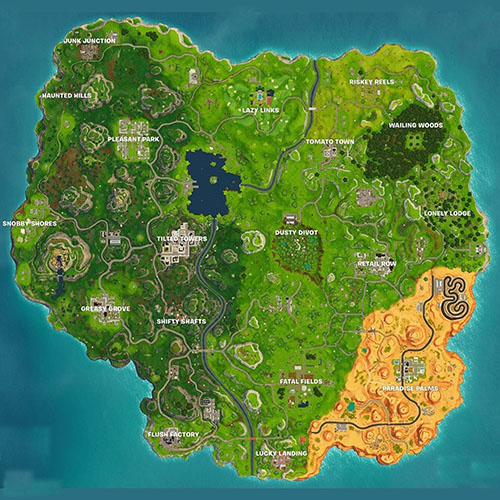
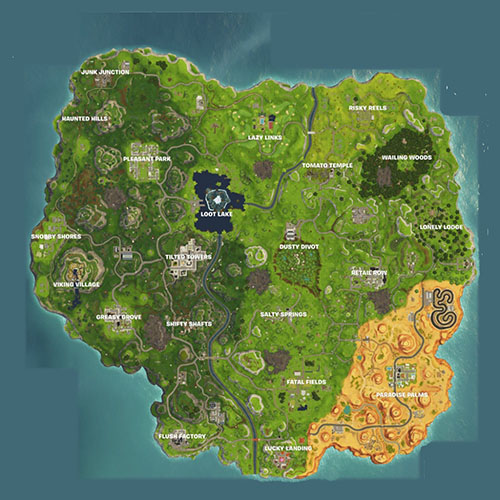
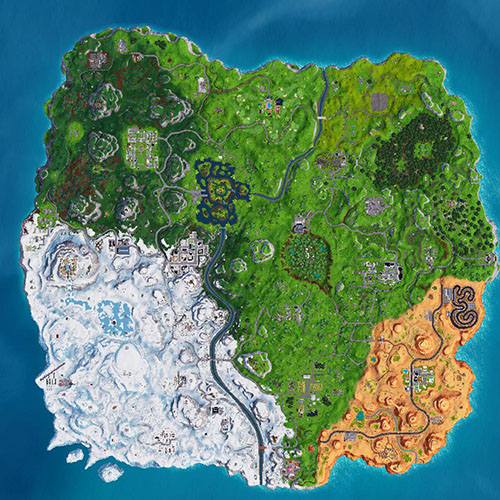
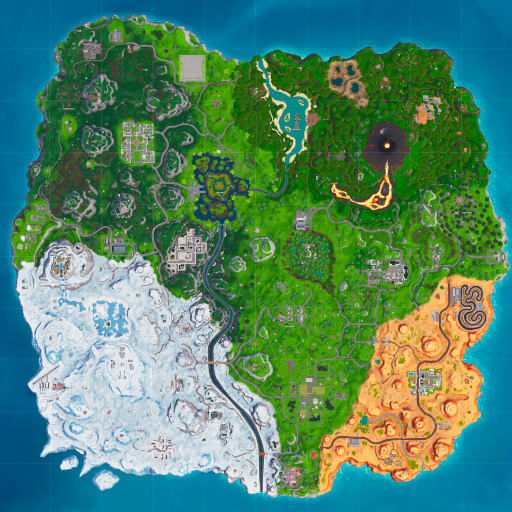

We're sorry but fortnite-map doesn't work properly without JavaScript enabled. Please enable it to continue.
Fortnite Interactive Challenges Map
Share on Facebook
Share on Twitter
Map
Past Seasons
Challenge locations by @thesquatingdog
Use this interactive fortnite map to find all of the weekly challenges easily and without having to search through blog posts.
Season 1
Season 2
Season 3
Season 4
Season 5
Season 6
Season 7
Season 8







